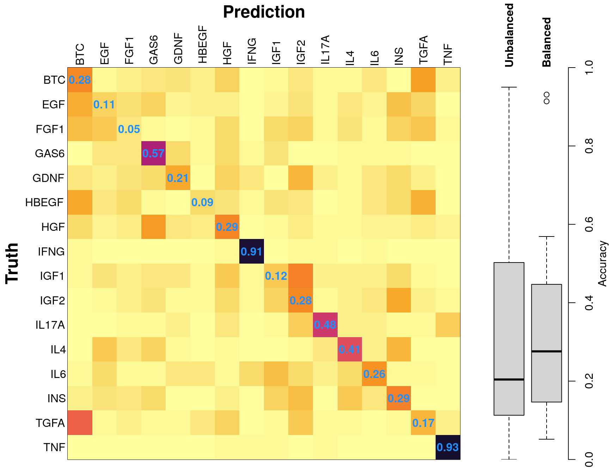
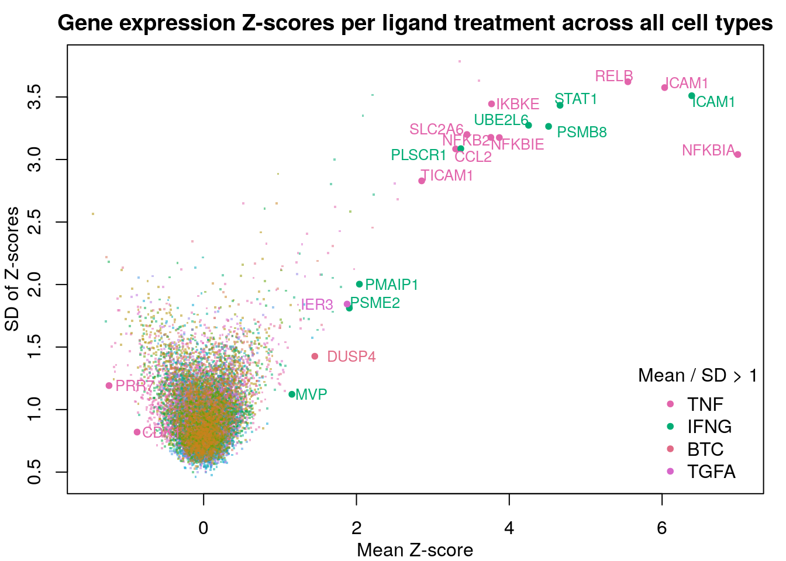
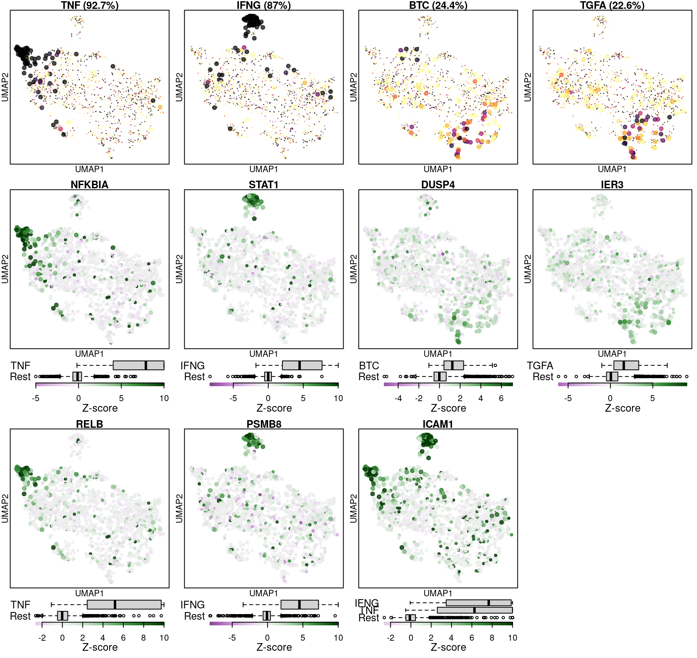
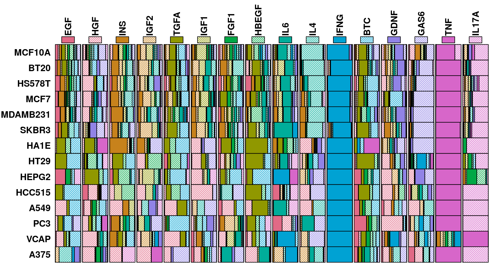

Differentiating ligand-perturbed transcriptomes
by training on all cell types
Since the replicate-aggregated Z-scores incorporate both ligand-treated and untreated transcriptomes into a single difference measure, testing for the ability to distinguish between treatment and control is not possible in this data. Instead, the random forest model will be trained to distinguish changes in transcriptome caused by different ligand treatments across a mix of all cell lines. This is done by training the model on a random sample of all 15 ligand treatments across all 14 cell types, with ligand labels provided. The distribution of training and test data is shown in the table below.
Random forest model source code
| BTC | EGF | FGF1 | GAS6 | GDNF | HBEGF | HGF | IFNG | IGF1 | IGF2 | IL17A | IL4 | IL6 | INS | TNF | |
|---|---|---|---|---|---|---|---|---|---|---|---|---|---|---|---|
| training | 45 | 101 | 50 | 53 | 58 | 59 | 56 | 58 | 55 | 50 | 52 | 49 | 50 | 60 | 52 |
| testing | 62 | 94 | 57 | 54 | 49 | 48 | 62 | 49 | 52 | 57 | 47 | 58 | 57 | 47 | 55 |
| total | 107 | 195 | 107 | 107 | 107 | 107 | 118 | 107 | 107 | 107 | 99 | 107 | 107 | 107 | 107 |
Average accuracy was 32.62%. This is perhaps unexpectedly bad, given that the model is seeing all the data, not trying to extrapolate to withheld cell lines.
Clearly the fact that EGF was tested more than the other ligands caused an imbalance in the training data, leading to a bias towards classifying samples as EGF-treated.
Balanced training data
To address the balancing issue, the training set was adjusted to ensure equal sampling of all ligands (leaving the remainder as the unbalanced test set). The distribution of training and test data is shown in the table below.
Random forest model source code
| BTC | EGF | FGF1 | GAS6 | GDNF | HBEGF | HGF | IFNG | IGF1 | IGF2 | IL17A | IL4 | IL6 | INS | TNF | |
|---|---|---|---|---|---|---|---|---|---|---|---|---|---|---|---|
| training | 49 | 49 | 49 | 49 | 49 | 49 | 49 | 49 | 49 | 49 | 49 | 49 | 49 | 49 | 49 |
| testing | 58 | 146 | 58 | 58 | 58 | 58 | 69 | 58 | 58 | 58 | 50 | 58 | 58 | 58 | 58 |
| total | 107 | 195 | 107 | 107 | 107 | 107 | 118 | 107 | 107 | 107 | 99 | 107 | 107 | 107 | 107 |

Average accuracy was 37.38%. This is still worse than one might expect. Given that this is serving as the positive control for the use of the level 5 data, I’d like to explore why its working well for a few ligands, and poorly for the rest.
Data saturation
Random forest model source code
Training the random forest model was repeated with increasing data, from one sample per ligand (randomly sampled from the 14 cell types) to 98 samples per ligand (all but one sample for most ligands, except EGF which has 195 samples).
Improvements in accuracy from increased training data level off after half the data is used, as was done in the previous models.
Ligand-specific differences in accuracy
Below are UMAP projections of all cells used in these models, coloured by cell type with each ligand treatment highlighted. The ligands are ordered by the accuracy of their prediction, and plots are outlined per the colour scheme above.
It is clear from this view that the model learns the transcriptional changes caused by the ligand well when those changes are consistent across a majority of cell lines, as with TNF and IFNG.
Are there specific genes marking these changes? Here are the mean and standard deviations of z-scores per gene for each ligand treatment across all cell lines. Note that this only included measured “landmark” genes. Genes with mean Z-score magnitudes larger than the standard deviation of their Z-scores are highlighted.

Given that nearly all highlighted genes are from the two most predictable ligand treatments, it seems that the model performs best when the ligand-induced changes in gene expression are common across all cell lines.
The following figure shows classification accuracy per cell (top row, darker indicates higher frequency of correct classification) and Z-scores of a selection of genes that strongly respond to the indicated ligand (from the above figure).

The model seems to do well when there are strong marker genes to aid in the classification, but a single weak marker gene like DUSP4 that has occasional high differential expression out of class is not sufficient to accurately classify ligand-treated cells in multiple cell types.
Cell-type biases in accuracy
Are there differences in the model’s ability to classify ligand treatments between cell types? In order to ask this, the model was repeatedly trained on a leave-one-out basis per ligand treatment such that each sample in a ligand treatment was tested for model classification accuracy at least 10 times.
This data was used to colour the UMAP projections in the top row of the previous figure, and results are summarized in the matrix below, with darker colour representing higher rates of correct classification (ranging from 0% to 100% accuracy) across >10 tests for each sample. The number of samples of each ligand tested in a cell type is indicated in blue.
Random forest model source code
The ligands were tested in multiple contexts (time / dose) in the breast tumour lines, so they have more training data available per cell line. This may improve classification tasks by allowing the model to learn cell-type specific gene expression changes. However, some ligands (eg. FGF1, EGF) proved challenging to predict even in breast lines with increased sampling.
Cell type misclassification biases
This figure shows the distribution of predicted ligands from the experiment above, in order to determine whether ligands were misclassified in a consistent manner.

The exemplar of consistent misclassification is IL17A in VCAP prostate tumour line, where in repeated leave-one-out tests its transcriptional changes were predicted to be due to TNF treatment 100% of the time. By inspecting the most differentially expressed genes in these transcriptomes, we may be able to explain why. In the case of IL17A-treated VCAP cells, ICAM1 and CCL2 are the most positively differentially expressed genes, as seen in the IL17A heatmap below. These genes are also consistently strong markers of TNF treatment in all cell lines, as seen in the volcano plot earlier.
Ligand response genes per cell type
To determine which genes had Z-scores (treated vs. control) with consistently high magnitudes within a cell type, one-way analyses of variance were performed with cell types as the independent variable and each gene’s Z-scores as the dependent variable. The T-statistic from each coefficient was used to summarize the Z-score distributions for each gene. The ten T-statistics with the highest magnitude per cell type are shown in the heatmaps below, with cell type prediction accuracies from above included as coloured bars next to each row. Click below for full-size image.

{kind=link}
{kind=link}
{kind=link}
{kind=link}
{kind=link}
{kind=link}
{kind=link}
{kind=link}
{kind=link}
{kind=link}
{kind=link}
{kind=link}
{kind=link}
{kind=link}